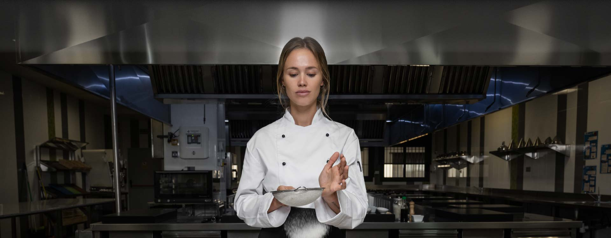
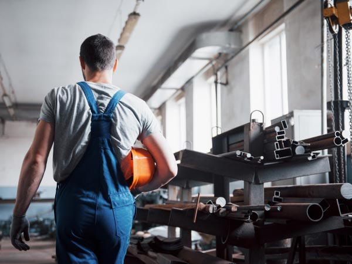
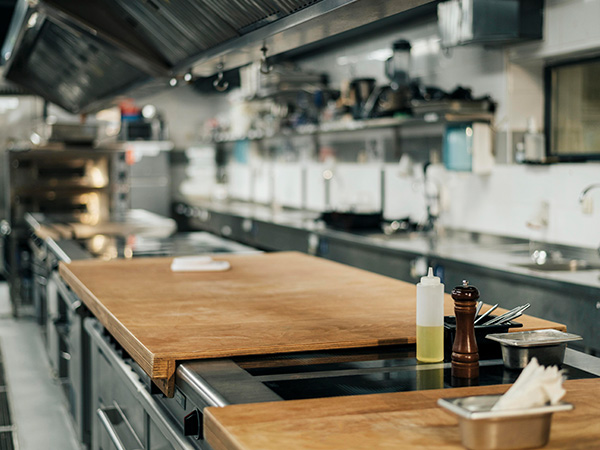
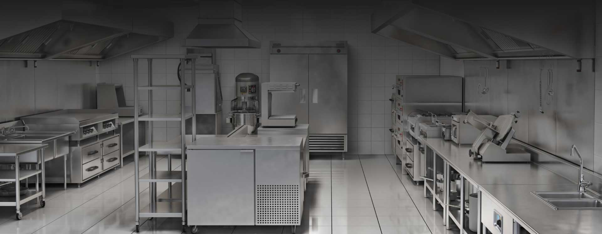

01
20 anos de mercado
Duas décadas consolidando o nome NOX como sinônimo de excelência mecânica e durabilidade no sul do país.

Fabricante de móveis e equipamentos sob medida em aço inoxidável para cozinhas industriais, padarias, hospitais e laboratórios. Fabricação e envio para todo o Brasil.
Sediada estrategicamente em Alvorada/RS, a NOX Cozinhas Industriais consolidou-se como referência na projeção, produção e montagem de móveis e equipamentos sob medida em aço inoxidável para o mercado profissional.
Do projeto inicial em CAD 3D à instalação final, atendemos padarias, hospitais, confeitarias, restaurantes, mercados e laboratórios em todo o Brasil.
Entregamos furação precisa, acabamentos impecáveis (escovados Scotch-Brite e polidos), solda cirúrgica TIG e total obediência às diretrizes de assepsia da ANVISA (RDC 50).


Aço inox não é apenas o nosso material de trabalho — é nossa matéria de valor.
Duas décadas de especialização em aço inoxidável nos tornaram referência de qualidade no sul do Brasil. Cada projeto é tratado como único.
Duas décadas consolidando o nome NOX como sinônimo de excelência mecânica e durabilidade no sul do país.
Projeto milimetricamente perfeito. Personalizamos tampos, cubas, espessuras de chapa e layouts para otimização da sua cozinha.
Ligas genuínas certificadas AISI 304 e AISI 430. Sem ligas baratas de rápida corrosão. Resistência que dura décadas.
Atendimento prioritário de segunda a sexta, das 8h às 18h. Garantia de que sua produção nunca para.
Garantia integral contra qualquer imperfeição de fabricação ou soldagem. Processo de soldagem TIG profissional ultra-limpo.
Seja para um gourmet residencial de condomínio ou uma cozinha fabril de hospitais, entregamos a mesma excelência.
Soluções específicas para cada segmento, do projeto à instalação.
Entenda as diferenças entre as ligas para tomar a melhor decisão no seu projeto.
| Propriedade | AISI 304 — Principal | AISI 316 — Nobre | AISI 430 — Opção |
|---|---|---|---|
| Magnético? | Não (Amagnético) | Não (Amagnético) | Sim (Magnético) |
| Corrosão | Excepcional | Soberana — Máx. Química | Moderada — Seco Apenas |
| Composição | 8–10% Ni | 10–14% Ni + 2–3% Mo | Isento de Ni/Mo |
| Aplicações | Bancadas e cozinhas gerais | Fritadeiras, marinhas | Suportes áreas secas |
| Classificação | Padrão NOX | Técnica Especial | Custo Reduzido |
Use sabão ou detergente neutro e água morna após o expediente diário de trabalho.
Seque perfeitamente com panos macios para evitar manchas minerais da água no inox.
Siga sempre o sentido do escovado Scotch-Brite original ao esfregar.
Nunca use palha de aço (ex: Bombril). Ela solta micropartículas de ferro que oxidam no inox.
Fique longe de produtos com cloro ativo, água sanitária ou ácidos muriáticos corrosivos.

Nossos engenheiros analisam sua necessidade e enviam um projeto detalhado em CAD 3D com todas as especificações técnicas antes da fabricação. Retorno em até 24 horas úteis.
Garantia de 6 meses contra defeitos de fabricação. Assistência técnica permanente própria de segunda a sexta, das 8h às 18h.